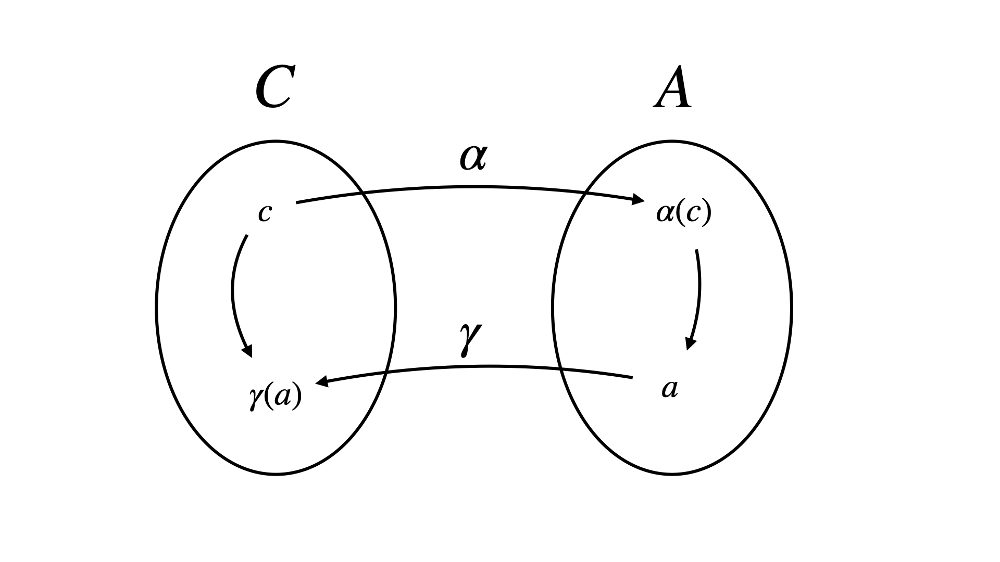

2025-04-18
If we want to analyze the behavior of a program, we typically perform some kind of abstraction. That is, we approximate the concrete semantics of the program in some way that is sufficient for analysis. Abstract interpretation provides a formal framework for defining and performing these types of program abstractions.
An abstraction domain is defined as follows:
\(C\) is a concrete domain i.e., a set of elements with an associated partial order \(\leq\).
\(A\) is an abstract domain with associated partial order \(\sqsubseteq\) (elements of \(A\) form a lattice).
We then define mappings between these two sets:
\(\gamma : A \rightarrow C\): A concretization function that maps abstract values to sets of concrete elements.
\(\alpha : C \rightarrow A\): An abstraction function that maps sets of concrete elements to the most precise value in the abstract domain.
where \(\alpha\) and \(\gamma\) must form a Galois connection. That is, they satisfy the following condition \[\begin{aligned} \forall c \in C, \forall a \in A : \alpha(x) \sqsubseteq a \Leftrightarrow c \sqsubseteq \gamma(a) \end{aligned}\]

Note that a lattice \(L=(S,\sqsubseteq)\) is a partially ordered set where each pair of elements has a least upper bound (i.e. join \(\sqcup\)) and a greatest lower bound (i.e. meet, \(\sqcap\)).